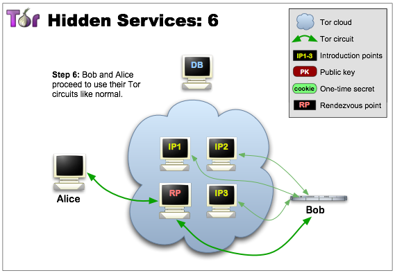

{kind=link}
We believe security software like Whonix needs to remain Open Source and independent. Would you help sustain and grow the project? Learn more about our 14 year success story and maybe DONATE!
Onion Services
Open the file /usr/local/etc/torrc.d/50_user.conf in a
 text editor of your choice with administrative rights.
text editor of your choice with administrative rights.
Tor makes it possible for users to hide their locations while offering various kinds of services, such as web publishing or an instant messaging server. [...] other Tor users can connect to these onion services, formerly known as hidden services, each without knowing the other's network identity. [1]
Why use Whonix for Hosting Onion Services
From https://www.whonix.org/#security [click expand] the most relevant features are:
- Impossible to leak IP address
- Discovery and traffic analysis attacks
- TCP ISN CPU Information Leak Protection
- Time Attack Defenses
All of the above are elaborated on in the link above.
Hosting onion services without Whonix and not having an IP leak is very difficult. See footnote for references. [2] It is so complex that without Whonix or something similar to Whonix, it is most likely unavoidable to have an IP leak. Additionally:
- Even if somebody hacks the hidden server software -- such as
micro-httpd,nginx, orapache-- the attacker cannot steal the onion service key or bypass Tor; see Attack on Whonix. The reason is that the key is stored on the Whonix-Gateway™. Once the Whonix-Workstation™ is cleaned, it is no longer possible for an adversary to impersonate the onion service.- An exception to this is if onion services are created by software running on Whonix-Workstation (examples documented at the time of writing are ZeroNet, OnionShare and Bisq). [3] This is opt-in and does not happen by default or by accident. When following the instructions on this page, this exception does not apply.
Tor Onion Services: Configuration
Introduction
Newcomers to this topic are recommended to first read the following Tor Project and Riseup documentation entries to better understand how onion services work, how they are safely configured outside of Whonix, and suggested best practices:
- general information;
- Configuring Onion Services for Tor (standard setup, no isolated proxy); and
- installation, configuration and protecting services
Note that onion services are only reachable using Tor or tunnel services, such as tor2web; caution is warranted when using a tunnel service.
For possible alternatives to onion services, see: Hosting Location Hidden Services.
Advantages
Onion addresses do not require Secure Sockets Layer (SSL) or Transport Layer Security (TLS) [4], because connections to Tor onion services are end-to-end encrypted by default. [5] [6] This is handy, as it is unnecessary to bother with self signed certificates or certificate authorities.
Another interesting onion service property is they can serve as a drop-in Global Server Load Balancing and Layer 3 DDoS-resistance solution. [7] This raises the bar to withstanding attacks that the entire Tor network can tolerate; the same applies to I2P Eepsites. Tor can also be considered a very simple to configure, encrypted transport alternative to IPSec. [8]
Disadvantages
The following Tor onion services disadvantages are general onion services issues, unspecific to Whonix.
- Online detection: Potential adversaries can detect whether the onion service (and presumably Tor) is up and running or not.
- No revocation: Revocation (similar to the GnuPG's revocation certificate feature) for onion services does not exist yet.
- No seed phrase backup: Creating backups of onion service private keys is more difficult than backing up most cryptocurrency wallets. A seed phrase based backup for onion service does not exist. To backup the private key for an onion service, the onion service private key file needs to be backed up. This is documented below.
Web Server Software Recommendations
If your needs are limited to hosting static pages, then look no
further than micro-httpd which is available from Debian
repositories. It is a bare-bones daemon made up of 150 lines of code.
[9]
It is best to avoid the Apache web server because it has
much more functionality, leak potential and attack surface than smaller
and lighter alternatives. If the Apache web server will be used
regardless, refer to the following footnotes. [10]
[11]
The Nginx web server is a recommended alternative to
Apache. If the Nginx web server will be used
regardless, refer to the following footnotes. [12]
Security Recommendations
 Credits: Some of these instructions are paraphrased
from Sarah Jamie Lewis' write-up after running OnionScan
[13] on the Onion web -- all credit goes to her.
[14] OnionScan is an open
source pen-testing suite that exposes misconfiguration errors that can
reveal Hidden Servers. Do run it before your service goes
live. [15]
Credits: Some of these instructions are paraphrased
from Sarah Jamie Lewis' write-up after running OnionScan
[13] on the Onion web -- all credit goes to her.
[14] OnionScan is an open
source pen-testing suite that exposes misconfiguration errors that can
reveal Hidden Servers. Do run it before your service goes
live. [15]
Domain |
Recommendation |
|---|---|
ALPaCA |
An advanced website fingerprinting client/server mitigation named ALPaCA is in development that applies server-side padding to requests sent out to Tor Browser. When finalized, service operators can run it to protect against this class of correlation attacks. [16] [17] [18] |
Application Level Leaks |
Beware of application level leaks; see Protocol Leak Protection and Fingerprinting Protection for a definition. |
Captcha |
|
Dedicated Onion Service Address |
Each service you host should get its own dedicated onion address to prevent correlation between multiple instances running in the same VM. |
Dedicated SSH Server Onion Address |
If hosting onion services on remote servers: Each server you host remotely should get its own dedicated onion address different from its service onion address. For example if xxx.onion is your onion web service then yyy.onion should be your private SSH server onion address. This is to increase the probability of still being able remote administrate your server through SSH should your separate onion service address be under DDoS (flood overload, resource exhaustion attack). See also recommendations for Remote Administration. |
Denial of Service (DoS) Attack Defense |
A researcher has posted his experience keeping their onion up during a massive DDoS. [19] |
Disable Banners |
Disable banners for SSH, FTP, SMTP and HTTP servers which leak information about the daemon's name and version. If the SSH instance is for private use, use it with an Authenticated Onion Service to protect the server from brute-force and remote exploitation. |
General Hardening |
Additional pointers for hardening can be found in the Basic Security Guide and Advanced Security Guide sections of the Documentation. |
Hide IP Address |
|
Mitigate DoS Attacks |
It is good practice to setup access to your site through reverse proxies to mitigate layer 7 DoS attacks. See for example Mitigating DDoS Attacks with NGINX and NGINX Plus. That way it may also be possible to block information leaks about your setup. |
OnionBalance |
OnionBalance can help to prevent de-anonymization of an onion service by protecting it from becoming unavailable through denial of service attacks (DDoS). OnionBalance is mentioned in the security readme by vanguards author and Tor developer Mike Perry where he discusses attacks against onion services and defenses. OnionBalance is now available for onion v3 services [21], see: Cooking with Onions: Reclaiming the Onionbalance. See also Whonix OnionBalance documentation. |
Onion v3 |
No longer use onion v2; see here. |
Server Software Hardening |
If any instructions for hardening the server instructions are available it is recommended to apply them, even though Whonix is designed to prevent IP/DNS leaks. |
|
|
|
Consider using Tor configuration option
|
|
Consider using Tor configuration option
|
The following resources are also recommended reading:
- The Tor Project: Onion service DoS guidelines
Setup Overview
Optional.
In Whonix, server applications typically run in a Whonix-Workstation, while Tor networking is handled by the Whonix-Gateway. This separation enhances security and anonymity.
Network Flow:
- 1) Tor connections reach the Whonix-Gateway.
- 2) Whonix-Gateway's Tor forwards connections to the
Whonix-Workstation
HiddenServicePortTARGET(IP, port) based on the Tor configuration. - 3) The Whonix-Workstation's firewall allows these forwarded connections.
- 4) The server application in the Whonix-Workstation processes the connections.
Instructions Overview:
NOTE: This is just a short overview. Detailed instructions can be found below. The user can skip reading this chapter.
1. Install and configure the server application inside Whonix-Workstation.
2. Configure the application to listen on all
network interfaces 0.0.0.0 inside Whonix-Workstation. For
elaboration and alternatives, see footnote. [23]
3. Edit Whonix-Workstation firewall configuration to open the port.
4. Reload the Whonix-Workstation firewall to apply the configuration changes.
5. Edit the Tor configuration file in Whonix-Gateway
to add a HiddenServicePort, so a Tor onion can open a
listening port on that VIRTPORT.
6. Reload Tor configuration.
7. Retrieve the .onion address.
8. Test.
9. Done.
Hidden Webserver
Whonix-Gateway
Perform all the following steps on the Whonix-Gateway.
Step 1: Open Tor Configuration
On the Whonix-Gateway.
Tor configuration file.
1 Sysmaint notice.
Ensure the VM has administrative (sudo / root) access first. See also sysmaint.
2 Platform specific. Select your platform.
Non-Qubes-Whonix
Requires booting into sysmaint session or
 unrestricted admin mode.
unrestricted admin mode.
Graphical Whonix-Gateway USER Session
This is not possible.
Graphical Whonix-Gateway SYSMAINT Session
If you are using a graphical Whonix-Gateway booted into
PERSISTENT Mode | SYSMAINT Session, take the following
step.
System Maintenance Panel ->
Open Terminal -> run
/usr/libexec/gateway-shortcuts/torrc
Graphical Whonix-Gateway Unrestricted Admin Mode
If you are using a graphical Whonix-Gateway and enabled
 unrestricted admin mode, take the following step.
unrestricted admin mode, take the following step.
Start Menu -> System Tools ->
Tor User Config
Terminal Whonix-Gateway
If you are using Whonix-Gateway with command line
interface (CLI), take the following step.
sudoedit
/usr/local/etc/torrc.d/50_user.conf
Requires booting into sysmaint session or
 unrestricted admin mode.
unrestricted admin mode.
Graphical Qubes-Whonix
If you are using Qubes-Whonix™ with a graphical desktop, take the following step.
Qubes App Launcher (blue/grey "Q") ->
Service ->
Whonix-Gateway™ ProxyVM (commonly named sys-whonix)
-> Tor User Config
Terminal Qubes-Whonix
If you are using Qubes-Whonix™ with a terminal, open
a terminal in sys-whonix and run the following command.
sudoedit /usr/local/etc/torrc.d/50_user.conf
Step 2: Edit Tor Configuration
On the Whonix-Gateway.
This step is necessary for all Whonix platforms.
Three settings must be added to
/usr/local/etc/torrc.d/50_user.conf:
- A
HiddenServiceDirconfiguration directive declaring where onion services files (hostname file and private key file) should be stored. - A
HiddenServicePortconfiguration directive declaring:VIRTPORT(virtual port); andTARGET, IP and port of the Whonix-Workstation that will run a server service that processes incoming onion service connections.
HiddenServiceVersionconfiguration directive declaring which onion service version to utilize (2or3).
On the Whonix-Gateway.
To specify necessary settings, add the following three lines.
Notes:
- The
HiddenServiceDirin the following example uses/var/lib/tor/hidden_service/. This is OK if using 1 onion service. If using multiple onion services, replace the folder namehidden_servicewith something else. For exampleHiddenServiceDir /var/lib/tor/hidden_service2/ - The
HiddenServicePortin the following example uses port80asVIRTPORT. The virtual port can be set to something else, depending on the server service to be provided. - The
HiddenServicePortin the following example usesTARGETIP address and portIP:80. In other words, the target IP address is followed by a colon (":") which is then followed by the target port number with no spaces. The target port number in this example80can be set to something else, depending on the server service to be provided.
Make sure to replace IP-of-q-ws-AppVM with the actual IP
address of the Whonix-Workstation.
Qubes-Whonix™ note: The IP of Whonix-Workstation™ AppVM needs to be replaced with the actual IP address. To find out the IP address of the Qubes-Whonix™ Whonix-Workstation™ AppVM, the following command can be run within the Qubes-Whonix™ Whonix-Workstation™ AppVM.
qubesdb-read /qubes-ip
Do not use IP 10.152.152.11 because that only works with
Non-Qubes-Whonix but not
with Qubes-Whonix. The IP
10.152.152.11 in line starting with
HiddenServicePort needs to be replaced.
HiddenServiceDir /var/lib/tor/hidden_service/ HiddenServicePort 80 IP-of-q-ws-AppVM:80 HiddenServiceVersion 3
HiddenServiceDir /var/lib/tor/hidden_service/ HiddenServicePort 80 10.152.152.11:80 HiddenServiceVersion 3
In all Whonix platforms, save the changes.
Step 3: Configure Onion Services Authentication
Optional: authenticated onion services.
Onion services authentication is only possible for private onion services with a limited number of visitors. This is impossible for a public onion service. For a public onion service this step should be skipped. Each visitor needs to be provided with a key file. This chapter describes the server side. The client side is described further below in chapter Onion Service Authentication Client Setup.
With v3 onion addresses it is no longer possible for adversaries to learn about their existence if they are not published; this was not the case previously with v2 onion addresses. Therefore, some readers might wonder what is the purpose of onion services authentication for v3 onions.
Authentication for v3 onions exists to eliminate the side risk of the onion address accidentally being leaked. This is feasible due to human error, a bug in the software using the onion address, or other yet unknown possibilities. By using onion services authentication, the onion service could not be accessed even if the onion address was leaked.
Quote: [24]
Also, if you have multiple users, having one v3 address with authentication is much better than multiple addresses, for the following reasons:
- easier management
- easier to configure and easier to maintain the application behind it (web server or whatever it is)
- less resources needed by the Tor daemon
- less load on your guard(s) / bridge(s), thus more capacity and better experience for your clients / visitors (if you have multiple addresses you need to maintain active introduction point circuits for all of them, publish descriptors, etc.)
On the Whonix-Gateway.
sudo anon-auth-autogen
Read the output.
Example output. Will differ in your case.
INFO: Created torconffile '/usr/local/etc/torrc.d/43_hidden_service_hs_autogen.conf'.
INFO: Reloading Tor.
INFO: Giving Tor 5 seconds to create hidden service file.
INFO: Installed ".auth" file (public key) '/var/lib/tor_autogen/hidden_service/1.auth' to '/var/lib/tor_autogen/hidden_service/1.auth' to allow client '1' to access hsname 'hidden_service' onion_url 'r3yzyxa2iptypjd2db7wl2ju62kyl5aq7mjmwl3wj4eim2y7kafztiid.onion'.
INFO: Reloading Tor again to activate ".auth" (public key) file for client '1'.
INFO: You need to provide client '1' with ".auth_private" file (private key) '/var/lib/tor_autogen/hidden_service/1.auth_private'.
INFO: Visitors that use {{project_name_short}} could store '/var/lib/tor_autogen/hidden_service/1.auth_private' in '/home/user/1.auth_private' and then run 'sudo sourcefile=/home/user/1.auth_private anon-server-to-client-install'.In above example the onion hostname is
r3yzyxa2iptypjd2db7wl2ju62kyl5aq7mjmwl3wj4eim2y7kafztiid.onion
without any apostrophe ("'") at the beginning or end.
Send the ".auth_private" file (private key) file
/var/lib/tor_autogen/hidden_service/1.auth_private to the
intended visitor of the authenticated onion v3 service. Related: File Transfer.
[25]
The visitor should follow instructions for the client side as described further below in chapter Onion Service Authentication Client Setup.
Step 4: Denial of Service Mitigation Options
Documentation for Denial of Service Mitigation Options is incomplete. Contributions are happily considered!
This step requires Tor 0.4.2.5 and above, see: Tor 0.4.25 release how can we upgrade.
Also refer to the Tor
manual and search for
DENIAL OF SERVICE MITIGATION OPTIONS.
Nothing Whonix specific regarding installation from source. As per:
See also: Onion Services DDOS Defense Tor 0.4.2.5
Step 5: Make Tor Configuration Changes Take Effect
On the Whonix-Gateway.
Reload Tor.
After changing Tor configuration, Tor must be reloaded for changes to take effect.
Note: If Tor does not connect after completing all
these steps, then a user mistake is the most likely explanation. Recheck
/usr/local/etc/torrc.d/50_user.conf and repeat the steps
outlined in the sections above. If Tor then connects successfully, all
the necessary changes have been made.
If you are using Qubes-Whonix™, complete the following steps.
Qubes App Launcher (blue/grey "Q") →
Service →
Whonix-Gateway™ ProxyVM (commonly named 'sys-whonix')
→ Reload Tor
If you are using a graphical Whonix-Gateway, complete the following steps.
Start Menu → System Tools →
Reload Tor
If you are using a terminal Whonix-Gateway, click
HERE
for instructions.
Complete the following steps.
Reload Tor.
sudo systemctl reload tor@default.service
Check Tor's daemon status.
sudo systemctl status tor@default.service
It should include a a message saying.
Active: active (running) since ...In case of issues, try the following debugging steps.
Check Tor's config.
sudo -u debian-tor tor --verify-config
The output should be similar to the following.
Sep 17 17:40:41.416 [notice] Read configuration file "/usr/local/etc/torrc.d/50_user.conf".
Configuration was validStep 6: Retrieve the Onion Hostname
On the Whonix-Gateway.
To retrieve your Tor onion service URL, run:
sudo cat /var/lib/tor/hidden_service/hostname
Note: If you only have 1 onion site, and the above
returns
cat: /var/lib/tor/hidden_service/hostname: No such file or directory,
then you may need to restart Tor. This can be accomplished
simply by stopping, then starting Tor.
Step 7: Backup the Tor Onion Service Private Key
On the Whonix-Gateway.
Reminder: Always backup the onion service key. This is necessary in order to restore it on another machine, on a newer Whonix-Gateway™, after HDD/SSD failure, etc. Follow the instructions below to find its location; root permission is required to access it.
/var/lib/tor/hidden_service/hs_ed25519_secret_key
The following example shows how to copy the /var/lib/tor/hidden_service/hs_ed25519_secret_key from the sys-whonix VM to the vault VM (which should be started beforehand) using qvm-copy. A dialog will appear asking for the destination VM.
sudo qvm-copy /var/lib/tor/hidden_service/hs_ed25519_secret_key
When the dialog appears asking to confirm, select vault. This copies the Tor onion service private key file to the QubesIncoming folder of the vault VM.
/home/user/QubesIncoming/sys-whonix/hs_ed25519_secret_key
Consider moving the file from the QubesIncoming folder to another preferred location.
Qubes VM Manager can be used to conveniently backup the vault and/or other VMs. Please refer to the Qubes backups documentation for necessary steps to accomplish that.
See also:
- file manager
 Thunar with Administrator Rights
Thunar with Administrator Rights - File Transfer
 Documentation for this is incomplete. Contributions are happily
considered! See this for
potential alternatives.
Documentation for this is incomplete. Contributions are happily
considered! See this for
potential alternatives.
Whonix-Workstation
Perform all the following steps on the Whonix-Workstation.
Step 1: Install Server Software
On the Whonix-Workstation.
Install either micro-httpd or
nginx.
A) Run the following commands to install
micro-httpd. OR
Install package(s) micro-httpd following these
instructions:
1 Platform specific notice.
- Non-Qubes-Whonix: No special notice.
- Qubes-Whonix: In Template.
2
 Update the package lists and upgrade the system.
Update the package lists and upgrade the system.
sudo apt update && sudo apt full-upgrade
3
Install the micro-httpd package(s).
Using apt command line
 <code>--no-install-recommends</code> option is in most cases
optional.
<code>--no-install-recommends</code> option is in most cases
optional.
sudo apt install --no-install-recommends micro-httpd
4 Platform specific notice.
- Non-Qubes-Whonix: No special notice.
- Qubes-Whonix: Shut down Template and restart App Qubes based on it
as per
Qubes Template Modification.
5 Done.
The procedure of installing package(s) micro-httpd is
complete.
B) Run the following commands to install
nginx.
Install package(s) nginx following these
instructions:
1 Platform specific notice.
- Non-Qubes-Whonix: No special notice.
- Qubes-Whonix: In Template.
2
 Update the package lists and upgrade the system.
Update the package lists and upgrade the system.
sudo apt update && sudo apt full-upgrade
3
Install the nginx package(s).
Using apt command line
 <code>--no-install-recommends</code> option is in most cases
optional.
<code>--no-install-recommends</code> option is in most cases
optional.
sudo apt install --no-install-recommends nginx
4 Platform specific notice.
- Non-Qubes-Whonix: No special notice.
- Qubes-Whonix: Shut down Template and restart App Qubes based on it
as per
Qubes Template Modification.
5 Done.
The procedure of installing package(s) nginx is
complete.
Step 2: Open Whonix-Workstation Firewall Port
On the Whonix-Workstation.
Modify Whonix-Workstation User Firewall Settings
Note: If no changes have yet been made to Whonix
Firewall Settings, then the Whonix User Firewall Settings File
/etc/whonix_firewall.d/50_user.conf appears empty (because
it does not exist). This is expected.
Ensure the VM has sudo access first. If
PERSISTENT Mode | SYSMAINT Session is available in some
form, you must boot into this mode before these steps will work.
Platform specific. Select your platform.
Graphical Whonix-Workstation USER Session
Start Menu → System Tools →
User Firewall SettingsGraphical Whonix-Workstation SYSMAINT Session
System Maintenance Panel → Open Terminal →
run /usr/libexec/whonix-firewall/firewall50userQubes App Launcher (blue/grey "Q") →
Whonix-Workstation App Qube (commonly called anon-whonix)
→ QTerminal → run
sudoedit /usr/local/etc/whonix_firewall.d/50_user.confTerminal Whonix-Workstation
Open file /usr/local/etc/whonix_firewall.d/50_user.conf
with root rights.
sudoedit /usr/local/etc/whonix_firewall.d/50_user.conf
For more help, press on Learn More on the right.
Note: This is for informational purposes only! Do
not edit
/etc/whonix_firewall.d/30_whonix_workstation_default.conf.
The Whonix Global Firewall Settings File
/etc/whonix_firewall.d/30_whonix_workstation_default.conf
contains default settings and explanatory comments about their purpose.
By default, the file is opened read-only and is not meant to be directly
edited. Below, it is recommended to open the file without root rights.
The file contains an explanatory comment on how to change firewall
settings.
## Please use "/etc/whonix_firewall.d/50_user.conf" for your custom configuration,
## which will override the defaults found here. When Whonix is updated, this
## file may be overwritten.Also see: Whonix modular flexible .d style configuration folders.
To view the file, follow these instructions.
If using Qubes-Whonix, complete these steps.
Qubes App Launcher (blue/grey "Q") →
Template → whonix-workstation-18 →
QTerminal → run
nano /etc/whonix_firewall.d/30_whonix_workstation_default.conf
If using a graphical Whonix-Workstation, complete these steps.
Start Menu → System Tools →
Global Firewall Settings
If using a terminal Whonix-Workstation, complete these steps.
In Whonix-Workstation, view the global firewall configuration file in an editor. nano /etc/whonix_firewall.d/30_whonix_workstation_default.conf
Add.
Note: If a different TARGET has been used in step 2, it
needs to be changed here as well.
EXTERNAL_OPEN_PORTS+=" 80 "
Save.
Reload Whonix-Workstation Firewall.
Ensure the VM has sudo access first. If
PERSISTENT Mode | SYSMAINT Session is available in some
form, and you are not booted into it, reboot the VM to reload the
firewall.
Platform-specific. Select your platform.
Graphical Whonix-Workstation USER Session
Start Menu → System Tools →
Reload FirewallGraphical Whonix-Workstation SYSMAINT Session
System Maintenance Panel → Open Terminal →
run sudo whonix_firewallTerminal Whonix-Workstation
sudo
whonix_firewall
Qubes App Launcher (blue/grey "Q") →
Whonix-Workstation App Qube (commonly named anon-whonix) →
QTerminal → run sudo whonix_firewallStep 3: Final Notes
The procedure is now complete.
Please note that it may take up to 30 minutes (or thereabouts) until
a fresh .onion address is reachable. Further, accessing
127.0.0.1 Local connections are no longer possible due to a
change
in Tor Browser by The Tor Project. Check Tor Browser, Local
Connections for more information and a workaround.
Debugging
Whonix-Gateway
Check permissions.
sudo ls -la /var/lib/tor/hidden_service/
In case you manually restored the hidden_service keys as root, Tor
will fail to start. The folder must be owned by debian-tor.
In that case, fix the permissions.
sudo chown debian-tor:debian-tor /var/lib/tor/hidden_service/
Whonix-Workstation
Check if the service is available on 127.0.0.1:80
## Circumventing Whonix curl stream isolation wrapper. UWT_DEV_PASSTHROUGH=1 curl 127.0.0.1:80
Qubes-Whonix: In Qubes-Whonix Whonix-Workstation, check if the service is available on Qubes-Whonix-Workstation IP, port 80.
## Circumventing Whonix curl stream isolation wrapper. UWT_DEV_PASSTHROUGH=1 curl $(qubesdb-read /qubes-ip):80
Non-Qubes-Whonix: In
Whonix-Workstation, check if the service is available on
10.152.152.11:80.
## Circumventing Whonix curl stream isolation wrapper. UWT_DEV_PASSTHROUGH=1 curl 10.152.152.11:80
Note: Tor Browser will allow connections to 127.0.0.1:80
but not to 10.152.152.11:80.
Setup Tips for any Onion Service
Please test the example Hidden Webserver above first; this helps in understanding the process in general and will ease debugging. The following material is quoted directly from the Tor manual:
HiddenServiceDir DIRECTORY
Store data files for a hidden service in DIRECTORY. Every hidden service must have a separate directory. You may use this option multiple times to specify multiple services. If DIRECTORY does not exist, Tor will create it. Please note that you cannot add new Onion Service to already running Tor instance if Sandbox is enabled.HiddenServicePort VIRTPORT [TARGET]
Configure a virtual port VIRTPORT for a hidden service. You may use this option multiple times; each time applies to the service using the most recent HiddenServiceDir. By default, this option maps the virtual port to the same port on 127.0.0.1 over TCP. You may override the target port, address, or both by specifying a target of addr, port, addr:port, or unix:path. (You can specify an IPv6 target as [addr]:port. Unix paths may be quoted, and may use standard C escapes.) You may also have multiple lines with the same VIRTPORT: when a user connects to that VIRTPORT, one of the TARGETs from those lines will be chosen at random. Note that address-port pairs have to be comma-separated.Hidden VoIP Server
On the VoIP page is an example for a Hidden VoIP Mumble Server.
Troubleshooting
Onion Services Reliability Issues
Experience report by a Whonix developer.
I am monitoring Whonix onion and an unpublished onion. There are reliability issues. 2-3 times per day, the onion is inaccessible. Isn't caused by Whonix. Even no Whonix involved. These are general Tor onion connectivity issues. Can't reproduce reliably. And I am not the only one. Therefore I didn't look into bug reporting yet.
Potential occasional issues:
Watch Logs
On Whonix-Gateway. Run the following command to watch both, vanguards and Tor's log output.
sudo journalctl -u vanguards -u tor@default -f
Bug
torsocks curl http://onionv3redacted.onion
curl output might include:
1593531192 ERROR torsocks[2452]: Host unreachable (in socks5_recv_connect_reply() at socks5.c:539)
curl: (7) Couldn't connect to serverTor vanguards log might include:
Possible Tor bug, or possible attack if very frequent: Got 1 dropped cell on circ 279088 (in state HS_SERVICE_REND HSSR_JOINED; old state HS_SERVICE_REND HSSR_CONNECTING)
We force-closed circuit 281935
Tor bug #29699: Got 1 dropped cell on circ 281934 (in state HS_SERVICE_INTRO HSSI_ESTABLISHED; old state HS_SERVICE_INTRO HSSI_CONNECTING).
We force-closed circuit 281934https://gitlab.torproject.org/legacy/trac/-/issues/29699 -> https://gitlab.torproject.org/legacy/trac/-/issues/26806 ->
- https://gitlab.torproject.org/legacy/trac/-/issues/29699 ( Tor: 0.4.3.x-final )
- https://gitlab.torproject.org/legacy/trac/-/issues/15618
- https://github.com/mikeperry-tor/vanguards/blob/a214408c09ad092d415ff1a0e7fec135c30e609e/src/vanguards/bandguards.py
- https://github.com/mikeperry-tor/vanguards/issues/37
- https://github.com/mikeperry-tor/vanguards/issues/37#issuecomment-472963014
- https://gitlab.torproject.org/legacy/trac/-/issues/29700
Tor Onion Services: Advanced Topics
OnionBalance
OnionBalance Introduction
OnionBalance can help to prevent de-anonymization of an onion service by protecting it from becoming unavailable through denial of service attacks (DDoS).
 Warning: This is for testers-only!
Warning: This is for testers-only!
This chapter OnionBalance is Unsupported! Forum discussion: https://forums.whonix.org/t/onionbalance-help/9965/10
Prerequisite knowledge:
- How to setup a "normal" Onion Service without OnionBalance with Whonix as per instructions earlier on this wiki page. The user should abstain from proceeding without having exercised that beforehand.
- The location of the
HiddenServiceDir. For example, folder/var/lib/tor/hidden_serviceor a different one if previously modified by the user. - The meaning of the
HiddenServicePortconfiguration directive as documented above.
Overview:
(Modified quote of upstream original OnionBalance documentation)
1. We will start by setting up the frontend host. We will install onionbalance and we will run onionbalance so that it generates a frontend onion service configuration.
2. We will then setup the backend instances by configuring Tor as an onion service and putting it into "onionbalance instance" mode.
3. In the end of the guide, we will setup onionbalance by informing it about the backend instances, and we will start it up. After this, we should have a working onionbalance configuration.
Ingredients:
(Modified quote of upstream original OnionBalance documentation)
To follow this recipe to completion we will need the following ingredients:
- A) A Whonix-Gateway that will run OnionBalance and act as the load balancing frontend; and
- B) two or more Whonix-Gateway that will run the backend Tor instances.
Notes:
The following notes are here for clarification. However, should these notes add more confusion than clarification, the user can also disregard these notes for now and re-read them later at the end. If the user is proceeding as documented after these notes, then there will be no issue as raised in these notes, which only applies to very specific custom user configurations.
- The OnionBalance frontend Whonix-Gateway can run "standalone"
without any accompanying Whonix-Workstation.
- Using a Whonix-Workstation in conjunction with the frontend Whonix-Gateway would be optional. Such a Whonix-Workstation would not provide any server services / open ports. Most users would probably not need it in such a setup.
- The OnionBalance backend Whonix-Gateway (where Tor is providing an
onion service) should probably be run in conjunction with
Whonix-Workstation (where a server service such as for example a web
server would open a port).
- Using
HiddenServicePortas documented above would be secure. That is because the connection from Tor on the Whonix-Gateway to the Whonix-Workstation would stay inside an internal, virtual local area network (LAN), not exposed to the open internet. - Using a server service hosted in yet another server such as if using
something similar to
HiddenServicePort 80 IP-of-an-external-server:80would be insecure. That is because Tor's outgoing connection to reach the server service is unauthenticated and unencrypted.- If the user is intending to do that, it is recommended to first use
the
HiddenServicePort"normally" to the Whonix-Workstation, then forward it to a different server hosted in a different location over an authenticated and encrypted tunnel. This specific configuration is unspecific to Whonix and undocumented.
- If the user is intending to do that, it is recommended to first use
the
- Using
- This is also illustrated in the following table.
Frontend |
Backend |
|
Whonix-Gateway |
Yes, required. |
Yes, required. |
Whonix-Workstation |
No, not needed. |
Highly recommended, but not required, see notes above. |
 Warning: The load balancing frontend as well as every backend
should probably run in different physical locations with different
server providers, internet services providers. It is probably okay for
testing purposes to set all of this up on a single computer but for
production use it should be more compartmentalized. That argument is,
because otherwise a high traffic onion service would be easier to
de-anonymize because a large volume of Tor traffic would originate from
a single location. More traffic than by other Tor users which would make
such a busy server stand out from other Tor users.
Warning: The load balancing frontend as well as every backend
should probably run in different physical locations with different
server providers, internet services providers. It is probably okay for
testing purposes to set all of this up on a single computer but for
production use it should be more compartmentalized. That argument is,
because otherwise a high traffic onion service would be easier to
de-anonymize because a large volume of Tor traffic would originate from
a single location. More traffic than by other Tor users which would make
such a busy server stand out from other Tor users.
Comments on upstream original OnionBalance documentation:
These comments are only important when wondering why this documentation is different from upstream documentation. Most users can skip reading these comments.
- Documentation is good but it is not written specifically for any specific Linux distribution such as Debian or for using a Debian package. Doing the same on Debian, Whonix, let alone Qubes results in some loose ends which are difficult for users to resolve. Therefore this documentation attempts to handle these peculiarities.
- Installation from Debian package sources which Whonix users can benefit from is a lot easier.
- No need to use
git clone,cd tor,autogen,configure,makethanks to the availability of a Debian package. - This documentation on this wiki page uses configuration folder
/etc/onionbalanceas that is the Debian way, the way how to Debianonionbalancepackage supposes this should be done. - By using the same file location
/etc/onionbalance/config.yamlas assumed by the Debian OnionBalance package also package provided systemd unit file/lib/systemd/system/onionbalance.servicecan be used which takes care of automatically starting OnionBalance after reboot. - Setting
SocksPort 0should not be used as this disables using Tor as a client for outgoing connections which is required by Whonix-Gateway. - Setting
ControlPort 127.0.0.1:6666should not be used because Whonix default Tor configuration already provides a Tor unix domain control socket. - Setting
DataDirectory /home/user/frontend_data/should not be used because Whonix uses the Tor Debian package which is already preconfigured by default and as appropriate using/var/lib/toras data directory. - Starting OnionBalance using
onionbalance -v info -c config/config.yaml -p 6666should probably be avoided unless that command is modified and used for debugging.- The part of the command
-p 6666should not be used as there is no such Tor control port in Debian or Whonix. Instead the Tor control socket (pre-configured inside Whonix) should be used. - OnionBalance should be started using the Debian OnionBalance package provided systemd unit.
- The part of the command
With this in mind, the user can view the upstream documentation too which is of course more authoritative than the third party documentation written here.
OnionBalance Frontend Setup Part One
On the Whonix-Gateway OnionBalance frontend server.
1. OnionBalance Package Installation
- Non-Qubes-Whonix™: Inside Whonix-Gateway.
- Qubes-Whonix: Inside Template (
whonix-gateway-18).
Install package(s) onionbalance following these
instructions:
1 Platform specific notice.
- Non-Qubes-Whonix: No special notice.
- Qubes-Whonix: In Template.
2
 Update the package lists and upgrade the system.
Update the package lists and upgrade the system.
sudo apt update && sudo apt full-upgrade
3
Install the onionbalance package(s).
Using apt command line
 <code>--no-install-recommends</code> option is in most cases
optional.
<code>--no-install-recommends</code> option is in most cases
optional.
sudo apt install --no-install-recommends onionbalance
4 Platform specific notice.
- Non-Qubes-Whonix: No special notice.
- Qubes-Whonix: Shut down Template and restart App Qubes based on it
as per
Qubes Template Modification.
5 Done.
The procedure of installing package(s) onionbalance is
complete.
- Non-Qubes-Whonix: No special action required. Skip this step.
- Qubes-Whonix: Shut down Template.
2. Platform Specific Notice
- Non-Qubes-Whonix: No special action required. Skip this step.
- Qubes-Whonix: Apply the following steps.
Inside Template (Qubes-Whonix Whonix-Gateway
(sys-whonix).
1. Make sure folder /rw/config/qubes-bind-dirs.d
exists.
sudo mkdir -p /rw/config/qubes-bind-dirs.d
2. Open file /rw/config/qubes-bind-dirs.d/50_user.conf
in an editor with administrative ("root") rights.
1 Select your platform.
2 Notes.
- Sudoedit guidance: See
Open File with Root Rights for details on why using
sudoeditimproves security and how to use it. - Editor requirement: Close Featherpad (or the chosen text
editor) before running the
sudoeditcommand.
3 Open the file with root rights.
sudoedit /rw/config/qubes-bind-dirs.d/50_user.conf
2 Notes.
- Sudoedit guidance: See
Open File with Root Rights for details on why using
sudoeditimproves security and how to use it. - Editor requirement: Close Featherpad (or the chosen text
editor) before running the
sudoeditcommand. - Template requirement: When using Qubes-Whonix, this must be done inside the Template.
3 Open the file with root rights.
sudoedit /rw/config/qubes-bind-dirs.d/50_user.conf
4 Notes.
- Shut down Template: After applying this change, shut down the Template.
- Restart App Qubes: All App Qubes based on the Template need to be restarted if they were already running.
- Qubes persistence: See also
Qubes Persistence
- General procedure: This is a general procedure required for Qubes and is unspecific to Qubes-Whonix.
2 Notes.
- Example only: This is just an example. Other tools could achieve the same goal.
- Troubleshooting and alternatives: If this example does not work for you, or if you are not using Whonix, please refer to Open File with Root Rights.
3 Open the file with root rights.
sudoedit /rw/config/qubes-bind-dirs.d/50_user.conf
3. Paste.
binds+=( '/etc/onionbalance' )
4. Save.
5. Reboot the app qube.
6. Done.
3. Initial frontend server OnionBalance Config File Creation and master service private key generation.
An OnionBalance config file needs to be generated.
Inside Whonix-Gateway (sys-whonix).
Syntax:
Note: Do not copy/paste/use this syntax without modification.
sudo onionbalance-config --output /etc/onionbalance --hs-version v3 -n number-of-backend-address-slotsExample:
Note: Replace 3 with the actual number of backend
address slots such as for example 4.
sudo onionbalance-config --output /etc/onionbalance --hs-version v3 -n 3
Above command will have generated two files.
- The OnionBalance config file:
/etc/onionbalance/config.yaml, and - the OnionBalance master service private key. Example:
dpkhemrbs3oiv2fww5sxs6r2uybczwijzfn2ezy2osaj7iox7kl7nhad.key- Note: the actual name will be different.
The config file can be easily modified with a text editor at any time.
4. View the OnionBalance configuration folder.
This is just for informational purposes as system administrators should have an idea in which locations configuration files and private keys are stored.
ls /etc/onionbalance
4. Retrieve the OnionBalance Frontend Hostname
To retrieve your OnionBalance Frontend onion service url, run.
sudo cat /etc/onionbalance/config.yaml | grep key
Example printout:
key: dpkhemrbs3oiv2fww5sxs6r2uybczwijzfn2ezy2osaj7iox7kl7nhad.keydpkhemrbs3oiv2fww5sxs6r2uybczwijzfn2ezy2osaj7iox7kl7nhadis an example, will be different.- Remove
key:. - Replace
.keywith.onion.
In that case the frontend's onion address is:
dpkhemrbs3oiv2fww5sxs6r2uybczwijzfn2ezy2osaj7iox7kl7nhad.onionA note (such as in a text file) with the frontend's onion address should be created for later reference by the user.
OnionBalance Backend Setup
On the Whonix-Gateway (sys-whonix) OnionBalance backend
servers.
1. Setup an Onion Service "normally" without OnionBalance first.
Similar as documented in instructions above for Hidden Webserver.
Note: This step is mandatory. Skipping this step will result in a failure. [26]
2. Test the "normal" Onion Service.
The user must verify that the onion service is reachable such as for example by visiting a hidden web server onion domain using Tor Browser. If it is unreachable, then there is no point in proceeding as OnionBalance will be unable to magically fix this issue.
3. Tor configuration file.
Open the file /usr/local/etc/torrc.d/50_user.conf in a
 text editor of your choice with administrative rights.
text editor of your choice with administrative rights.
1 Sysmaint notice.
Ensure the VM has administrative (sudo / root) access first. See also sysmaint.
2 Platform specific. Select your platform.
Non-Qubes-Whonix
Requires booting into sysmaint session or
 unrestricted admin mode.
unrestricted admin mode.
Graphical Whonix-Gateway USER Session
This is not possible.
Graphical Whonix-Gateway SYSMAINT Session
If you are using a graphical Whonix-Gateway booted into
PERSISTENT Mode | SYSMAINT Session, take the following
step.
System Maintenance Panel ->
Open Terminal -> run
/usr/libexec/gateway-shortcuts/torrc
Graphical Whonix-Gateway Unrestricted Admin Mode
If you are using a graphical Whonix-Gateway and enabled
 unrestricted admin mode, take the following step.
unrestricted admin mode, take the following step.
Start Menu -> System Tools ->
Tor User Config
Terminal Whonix-Gateway
If you are using Whonix-Gateway with command line
interface (CLI), take the following step.
sudoedit
/usr/local/etc/torrc.d/50_user.conf
Requires booting into sysmaint session or
 unrestricted admin mode.
unrestricted admin mode.
Graphical Qubes-Whonix
If you are using Qubes-Whonix™ with a graphical desktop, take the following step.
Qubes App Launcher (blue/grey "Q") ->
Service ->
Whonix-Gateway™ ProxyVM (commonly named sys-whonix)
-> Tor User Config
Terminal Qubes-Whonix
If you are using Qubes-Whonix™ with a terminal, open
a terminal in sys-whonix and run the following command.
sudoedit /usr/local/etc/torrc.d/50_user.conf
4. Append.
HiddenServiceOnionbalanceInstance 1
5. Save.
6. ob_config File Creation
The ob_config file needs to be created and point to the
MasterOnionAddress.
1. Find out the path to the
ob_config.
Path syntax: In the HiddenServiceDir a file
ob_config needs to be created. For example when using the
default HiddenServiceDir /var/lib/tor/hidden_service/:
2. Open the ob_config file.
Note: Replace /var/lib/tor/hidden_service with a
different path if the user is using a different
HiddenServiceDir.
Open file /var/lib/tor/hidden_service/ob_config in an
editor with administrative ("root") rights.
1 Select your platform.
2 Notes.
- Sudoedit guidance: See
Open File with Root Rights for details on why using
sudoeditimproves security and how to use it. - Editor requirement: Close Featherpad (or the chosen text
editor) before running the
sudoeditcommand.
3 Open the file with root rights.
sudoedit /var/lib/tor/hidden_service/ob_config
2 Notes.
- Sudoedit guidance: See
Open File with Root Rights for details on why using
sudoeditimproves security and how to use it. - Editor requirement: Close Featherpad (or the chosen text
editor) before running the
sudoeditcommand. - Template requirement: When using Qubes-Whonix, this must be done inside the Template.
3 Open the file with root rights.
sudoedit /var/lib/tor/hidden_service/ob_config
4 Notes.
- Shut down Template: After applying this change, shut down the Template.
- Restart App Qubes: All App Qubes based on the Template need to be restarted if they were already running.
- Qubes persistence: See also
Qubes Persistence
- General procedure: This is a general procedure required for Qubes and is unspecific to Qubes-Whonix.
2 Notes.
- Example only: This is just an example. Other tools could achieve the same goal.
- Troubleshooting and alternatives: If this example does not work for you, or if you are not using Whonix, please refer to Open File with Root Rights.
3 Open the file with root rights.
sudoedit /var/lib/tor/hidden_service/ob_config
3. Paste.
Note: Replace
dpkhemrbs3oiv2fww5sxs6r2uybczwijzfn2ezy2osaj7iox7kl7nhad.onion
with the actual MasterOnionAddress.
MasterOnionAddress dpkhemrbs3oiv2fww5sxs6r2uybczwijzfn2ezy2osaj7iox7kl7nhad.onion
4. Done.
ob_config file creation has been completed.
7. Make Tor Configuration Changes Take Effect
Reload Tor.
After changing Tor configuration, Tor must be reloaded for changes to take effect.
Note: If Tor does not connect after completing all
these steps, then a user mistake is the most likely explanation. Recheck
/usr/local/etc/torrc.d/50_user.conf and repeat the steps
outlined in the sections above. If Tor then connects successfully, all
the necessary changes have been made.
If you are using Qubes-Whonix™, complete the following steps.
Qubes App Launcher (blue/grey "Q") →
Service →
Whonix-Gateway™ ProxyVM (commonly named 'sys-whonix')
→ Reload Tor
If you are using a graphical Whonix-Gateway, complete the following steps.
Start Menu → System Tools →
Reload Tor
If you are using a terminal Whonix-Gateway, click
HERE
for instructions.
Complete the following steps.
Reload Tor.
sudo systemctl reload tor@default.service
Check Tor's daemon status.
sudo systemctl status tor@default.service
It should include a a message saying.
Active: active (running) since ...In case of issues, try the following debugging steps.
Check Tor's config.
sudo -u debian-tor tor --verify-config
The output should be similar to the following.
Sep 17 17:40:41.416 [notice] Read configuration file "/usr/local/etc/torrc.d/50_user.conf".
Configuration was valid8. Test the OnionBalance Backend Onion Service.
The user must verify that the OnionBalance Backend reachable such as for example by visiting a hidden web server onion domain using Tor Browser. If it is unreachable, then there is no point in proceeding as OnionBalance will be unable to magically fix this issue.
9. Good progress.
An OnionBalance backend instance has been set up.
10. Repeat these instructions for other OnionBalance backend instances.
11. Done.
The OnionBalance backend instances setup has been completed.
OnionBalance Frontend Setup Part Two
On the Whonix-Gateway OnionBalance frontend server.
1. OnionBalance Frontend Config File Setup
Open file /etc/onionbalance/config.yaml in an editor
with administrative ("root") rights.
1 Select your platform.
2 Notes.
- Sudoedit guidance: See
Open File with Root Rights for details on why using
sudoeditimproves security and how to use it. - Editor requirement: Close Featherpad (or the chosen text
editor) before running the
sudoeditcommand.
3 Open the file with root rights.
sudoedit /etc/onionbalance/config.yaml
2 Notes.
- Sudoedit guidance: See
Open File with Root Rights for details on why using
sudoeditimproves security and how to use it. - Editor requirement: Close Featherpad (or the chosen text
editor) before running the
sudoeditcommand. - Template requirement: When using Qubes-Whonix, this must be done inside the Template.
3 Open the file with root rights.
sudoedit /etc/onionbalance/config.yaml
4 Notes.
- Shut down Template: After applying this change, shut down the Template.
- Restart App Qubes: All App Qubes based on the Template need to be restarted if they were already running.
- Qubes persistence: See also
Qubes Persistence
- General procedure: This is a general procedure required for Qubes and is unspecific to Qubes-Whonix.
2 Notes.
- Example only: This is just an example. Other tools could achieve the same goal.
- Troubleshooting and alternatives: If this example does not work for you, or if you are not using Whonix, please refer to Open File with Root Rights.
3 Open the file with root rights.
sudoedit /etc/onionbalance/config.yaml
2. Example of how the file initially will look like.
For informational purposes only.
# OnionBalance Config File
services:
- instances:
- address: <Enter the instance onion address here>
name: node1
- address: <Enter the instance onion address here>
name: node2
- address: <Enter the instance onion address here>
name: node3
key: dpkhemrbs3oiv2fww5sxs6r2uybczwijzfn2ezy2osaj7iox7kl7nhad.key3. Edit.
- The textual strings have to be replaced with the actual onion service domain names.
- The onion service domain names should not be encapsulated by
<or>.
Example, wrong, do not use |
|
|---|---|
Example, correct - only an example, do not use the same: |
|
4. Example.
The user is free to disregard this example if too confusing.
services: - instances:
- address: wmilwokvqistssclrjdi5arzrctn6bznkwmosvfyobmyv2fc3idbpwyd.onion
name: node1
- address: fp32xzad7wlnpd4n7jltrb3w3xyj23ppgsnuzhhkzlhbt5337aw2joad.onion
name: node2
- address: u6uoeftsysttxeheyxtgdxssnhutmoo2y2rw6igh5ez4hpxaz4dap7ad.onion
name: node3
key: dpkhemrbs3oiv2fww5sxs6r2uybczwijzfn2ezy2osaj7iox7kl7nhad.key
Note: In above example, the following textual strings (onion service domain names) would have to be replaced with the actual onion service domain names used by the user.
wmilwokvqistssclrjdi5arzrctn6bznkwmosvfyobmyv2fc3idbpwyd.onionfp32xzad7wlnpd4n7jltrb3w3xyj23ppgsnuzhhkzlhbt5337aw2joad.onionu6uoeftsysttxeheyxtgdxssnhutmoo2y2rw6igh5ez4hpxaz4dap7ad.oniondpkhemrbs3oiv2fww5sxs6r2uybczwijzfn2ezy2osaj7iox7kl7nhad.key
4. Save.
5. Start OnionBalance.
sudo systemctl restart onionbalance
No reboot is required at this time. However, OnionBalance should start automatically after reboot thanks to the systemd unit provided by the OnionBalance Debian package.
6. Check OnionBalance systemd unit status.
Optional. Useful for troubleshooting.
sudo systemctl status onionbalance
6. Check OnionBalance logs.
Optional. Useful for troubleshooting.
See the following wiki chapters. Note: The unit-name is
onionbalance.
7. Backup.
A backup of folder /etc/onionbalance should be created.
Similar to instructions for "normal" onion services but with
folder /etc/onionbalance. Alternatively, the user could
make a backup of the whole VM.
8. Done.
The OnionBalance Frontend Setup has been completed.
OnionBalance Advanced Security
OnionBalance is mentioned in the vanguards security readme by vanguards author and Tor developer Mike Perry where he discusses attacks against onion services and defenses. Additional OnionBalance and/or vanguards settings might improve the security of the onion service, which is undocumented in Whonix wiki.
Onion Services Security Enhancements
Over time, The Tor Project is steadily releasing additional features which enhance onion services security. Recent efforts to protect against guard enumeration attacks include the vanguards add-on and additional torrc options to pin the second and third hops of onion service circuits to a list of nodes. To learn more about these enhancements and their optional configuration, see:
- Announcing the Vanguards Add-On for Onion Services
- Vanguards GitHub resource
- vanguards - Additional protections for Tor Onion Services
- Onion Service Guard Protection - HSLayer2Nodes / HSLayer3Nodes
How Onion Services Connections Work
To understand how onion services work, a simple overview of the process is outlined below. [27]
Step 1. Onion services advertise their existence in the Tor network. This is done by randomly picking some relays and building circuits, before asking these relays to act as introduction points by providing the service's public key. The onion server's location (IP address) is shielded.
Step 2. The onion service generates an onion service descriptor containing the public key and a summary of introduction points. This is signed with its private key and then uploaded to a distributed hash table, so users can find the service when searching for a .onion resource. [28] This also forms an important verification mechanism for the user to confirm they are talking to the right onion service.
Step 3. The user who learnt that the .onion resource exists requests more information from the database, by downloading the descriptor from the distributed hash table. If the descriptor exists, the user now knows the introduction points and the right public key to use. The user also creates a Tor circuit to another randomly picked relay to use as a rendezvous point (with a one-time secret).
Step 4. If the descriptor is present and the rendezvous point is ready, the user assembles an "introduce message". This is encrypted to the onion service's public key and includes the rendezvous point address and the one-time secret. The user requests this be delivered to the onion service (via a Tor circuit) anonymously, so the IP address remains hidden.
Step 5. The onion service decrypts the user's introduce message and finds the rendezvous point address and one-time secret in it. The service creates a circuit to the rendezvous point and sends the one-time secret to it in a rendezvous message. The onion service must use the same set of entry guards when creating circuits, to prevent attackers from forcing onion services to use corrupt relays as an entry node (and learning the onion server's IP address via timing analysis).
Step 6. The rendezvous point notifies the user the successful connection has been established. Both the user and onion service use their circuits to the rendezvous point for communication. The rendezvous point relays end-to-end encrypted messages from user to service and vice versa.
Use of .onion addresses leads to a 6 relay arrangement: 3 picked by the user (with the third used as a rendezvous point), and 3 picked by the onion service. The final successful connection between a user and an onion service is represented in the picture below.
Figure: Alice (User) and Bob (Onion Service) Successful Connection [29]

Onion Services Security
 This is not a Whonix-specific issue. This section considers Tor and
onion services security in general terms.
This is not a Whonix-specific issue. This section considers Tor and
onion services security in general terms.
It is difficult to confirm exactly how safe Tor onion services are. Therefore, this section is intended as a repository of relevant facts, quotes and links to provide an estimation; feel free to add further germane material.
Roger Dingledine, an original developer of Tor, addressed this issue in a 2013 tor-talk mailing list How easy are Tor hidden services to locate?:
Hidden services are definitely weaker than regular Tor circuits, a) because the adversary can induce them to speak, and b) because they stay at the same place over time. Mostly 'a'.
That said, there are plenty of hidden services out there, and few stories of people breaking their anonymity by breaking Tor. So they're not foolproof for sure, but they're also not trivial to deanonymize.
I'll turn it around, and ask "easy compared to what?"
Roger also added:
When you're a Tor client, you only use the Tor network when you choose to access it (e.g. by trying to fetch a web page). So if the attacker has some attack that works only a very small percentage of time, they have to wait for you to initiate connections.
But for a hidden service, they can cause you to initiate a connection just by visiting the hidden service. And they can do it as often as they want.
See https://www.freehaven.net/anonbib/#hs-attack06 for the original paper about this topic (and the reason we implemented entry guards).
And then see https://www.freehaven.net/anonbib/#wpes12-cogs for a more recent example. The goal of that paper is to understand how long it takes in normal operation (with entry guards going offline and being replaced) before a typical user touches an adversary-controlled guard node. For simplicity, the paper assumes that you use your guards every minute of every day for however many weeks or months it takes. A realistic user doesn't do that, so the paper overestimates the risk. But a realistic hidden service *would* do that, if the adversary caused it to.
--Roger
At the time of writing there are no known attacks used in the wild that consistently deanonymize Tor onion services. However, there is a plethora of Speculative Tor Attacks against the ecosystem that have been highlighted in research settings, including those that specifically target the server or client and server in combination. Therefore, Tor processes and anonymity protection might be seriously degraded under specific conditions.
A number of serious onion service concerns [30] have
been mitigated since The Tor Project announced the release of v3
(HiddenServiceVersion 3) onions in 2017, succeeding the
original v2 onion service design, see: Tor's
Fall Harvest: The Next Generation of Onion Services.
Onion Service Authentication Client Setup
There are two options to set up Onion Service Client Authentication. Choose either option A) or B).
- A) Tor Browser Onion Client Authorization, or
- B) Onion Service Client Authentication setup on Whonix-Gateway, see below.
These options should never be combined for the same onion service.
To set up Onion Service Client Authentication on Whonix-Gateway, perform the following instructions.
1. Receive ".auth_private" file (private key) (for
example: 1.auth_private) from authenticated onion v3
service provider.
2. Move to Whonix-Gateway home folder
/home/user.
3. Install ".auth_private" file (private key).
sudo anon-server-to-client-install 1.auth_private
Example printout.
INFO: Installed ".auth_private" file (private key) '/home/user/1.auth_private' to '/var/lib/tor/authdir/1.auth_private'.
INFO: Created torconffile '/usr/local/etc/torrc.d/43_clientonionauthdir.conf'.
INFO: Reloading Tor to activate ".auth_private" file (private key).
INFO: Success.3. Done.
The procedure of setting up Onion Service Client Authentication has been completed.
Notes about End-to-end Security of Onion Services
Hidden services are not really encrypted "end-to-end", they are only encrypted "Tor-to-end" (or "Tor-to-Tor"). The communication between the browser or server and Tor is sent in clear text. This does not really constitute a security issue, as localhost (or Workstation to Gateway on an isolated network), is supposed to be secure. But this does pose some security implications.
Firstly, with onion services alone and no TLS enabled, the adversary only needs to compromise Whonix-Gateway to gain knowledge of the content of the connection and the client's identity/location. To compromise the content of the connection, the adversary only needs to compromise either the gateway or the workstation.
With both onion services and TLS enabled, an adversary needs to compromise Whonix-Workstation to gain knowledge of the content of the connection. To gain knowledge of the client's identity/location, the adversary would have to compromise Whonix-Gateway as well.
Although it is possible to use onion services and TLS in combination
-- that is, https://****************.onion -- there are
very few onion services reachable over TLS. For example, DuckDuckGo
search engine https://duckduckgo.com/ can be
reached over https://duckduckgogg42xjoc72x3sjasowoarfbgcmvfimaftt6twagswzczad.onion/.
But since this only offers benefits to users of Whonix (and other Tor
gateway implementations), there is little demand. However, it does
provide some nice defense in depth because it eliminates a single point
of failure.
This does raise the question as to how the TLS certificate can be verified. That is a simple process for private sites where the server and clients know each other; they simply verify it over a pre-shared secure channel, for example a meeting.
In regards to public onion services, certificate authorities previously refused to give out certificates for .onion sites, for example Startssl.com declined because .onion is no .gTLD, see: Bug #6116: apply for .onion gTLD at IANA. However, in DuckDuckGo's case, a certificate has been issued by DigiCert which confirms TLS certificates can be issued for people who can reasonably prove they own a .onion domain. Presumably evidence of domain control may include editing its contents upon their request. Nevertheless, little faith should be placed in certificate authorities, see: Transport Layer Security (TLS).
Finally, it should be noted that running onion services with Whonix is safer than running Tor and the server software on the same host, because even when misconfigured, there cannot be any IP or DNS leaks (by design).
Further reading:
- Don't HTTPS Your Onions (.onion)
- Get a TLS certificate for your onion site
- HTTPS for your onion service (.onion)
- (No) Onion TLS on the Whonix Website.
https://www.namecoin.org/docs/faq/#do-i-need-to-use-tls-with-a-bit-domain-that-points-to-a-tor-onion-service-or-i2p-eepsite
High Traffic Onion Service Scalability Performance
Although mostly focused on non-anonymous onion services, the tor-dev mailing list discussion onionbalance useful on same server / for high-spec non-location hidden servers? contains interesting information on scalability and performance of high traffic onion services. The tor-dev mailing list (sign-up) is considered a useful resource for technical information since they are receptive to genuine inquiries.
Performance
See Also
- Hosting Location Hidden Services
- Onion Services Guides
- Remote Administration including SSH / VNC (x2go) into Whonix
References
- https://2019.www.torproject.org/docs/onion-services.html.en
- * https://blog.0day.rocks/securing-a-web-hidden-service-89d935ba1c1d * https://null-byte.wonderhowto.com/how-to/detect-misconfigurations-anonymous-dark-web-sites-with-onionscan-0181366/ * https://www.secjuice.com/finding-real-ips-of-origin-servers-behind-cloudflare-or-tor/ * Also useful to learn about related topic to find out how the origin IP of a server behind a CDN can be found out. * See also onionscan.
- These applications talk to the Tor control port directly (filtered)
through onion-grater, and
create onion services through the Tor control protocol command
ADD_ONION. - https://en.wikipedia.org/wiki/Transport_Layer_Security
- To be exact, only tor-to-tor, see Notes about End-to-end Security of Onion Services.
- https://archive.ph/qCRb5
- https://archive.ph/Aaqsz
- https://lists.torproject.org/pipermail/tor-talk/2016-October/042360.html
- https://wiki.debian.org/WebServers
- It is advised to install libapache2-mod-removeip.
Install package(s)
libapache2-mod-removeipfollowing these instructions: 1 Platform specific notice. * Non-Qubes-Whonix: No special notice. * Qubes-Whonix: In Template. 2
Update the package lists and upgrade the system.
sudo
apt update && sudo apt full-upgrade
3
Install the libapache2-mod-removeippackage(s). Usingaptcommand line
<code>--no-install-recommends</code> option is in most cases
optional.
sudo
apt install --no-install-recommends libapache2-mod-removeip
4
Platform specific notice. * Non-Qubes-Whonix: No special notice. *
Qubes-Whonix: Shut down Template and restart App Qubes based on it as
per
Qubes Template Modification.
5
Done. The procedure of installing package(s)
libapache2-mod-removeipis complete. - (Source: old
forum)
1. Stop Apache. 2. In ports.conf:
NameVirtualHost 127.0.0.1:80 Listen 127.0.0.1:80 ServerName localhost3. In sites-available/default:
4. Start Apache and redirect the listening port. Apache will not be listening on 10.152.152.10, but only on 127.0.0.1. Therefore it is necessary to redirect 10.152.152.10:80 to 127.0.0.1:80. This can be achieved with a firewall rule or netcat: sudo ncat -l 10.152.152.10 80 -c 'ncat 127.0.0.1 80'
- * https://tor.stackexchange.com/questions/17366/nginx-leaks-my-hidden-service-port-number * https://tor.stackexchange.com/questions/15099/nginx-directory-disclosures * https://scotthelme.co.uk/hardening-your-http-response-headers/ * https://trac.nginx.org/nginx/ticket/523
- https://mascherari.press/why-onionscan-should-worry-you/
- https://mascherari.press/thwarting-identity-correlation-attacks/
- At the time of writing, OnionScan has not had any commits since early 2017.
- https://github.com/camelids/
- Website Fingerprinting Defenses at the Application Layer
- https://web.archive.org/web/20170421225506/https://www.esat.kuleuven.be/cosic/?p=6743
- https://forums.whonix.org/t/ship-or-document-ddos-resistant-torrc-settings/10417
- Since it is easy to confirm that the internal LAN IP
10.152.152.10is normally used by Whonix-Gateway. - * https://github.com/DonnchaC/onionbalance/issues/69#issuecomment-58108608 * Tor development mailing list - Request for onionbalance v3 pre-alpha testing
- * https://forum.torproject.net/t/alpha-release-0-4-8-1-alpha/7816 * https://forums.whonix.org/t/tor-0-4-8-interesting-features/16768
- Listening on
0.0.0.0means the application will accept connections on any IP address irrespective of the Whonix-Workstation's actual internal network interfaceeth0assigned IP address. Why not listen on localhost127.0.0.1inside Whonix-Workstation? * Generally, unspecific to Whonix: One computer/VM cannot directly connect to another computer's/VM's localhost. * Whonix specific: Tor running on Whonix-Gateway can only connect to the applications on Whonix-Workstation listening on eth0 external network interfaces but not directly to Whonix-Workstation localhost. Therefore, the application in Whonix-Workstation must not listen on localhost but on eth0. Alternatives to listening on0.0.0.0: * A) It would also be possible for the server application to listen only on Whonix-Workstation internal network interfaceeth0. This however requires the application to support listening on a network interface rather than a hardcoded IP address. Many applications do not support that. * B) Listen on Whonix-Workstation internal IP address. * C) Listen on localhost127.0.0.1and then use something such as Qubes qrexec to connect Tor'sVIRTPORTto the application's listening port. - The purpose of Onion Services Authentication has been asked about on the Tor Talk Mailing List. Answers: * https://lists.torproject.org/pipermail/tor-dev/2019-December/014106.html * https://lists.torproject.org/pipermail/tor-dev/2019-December/014107.html * https://forums.whonix.org/t/onion-services-authentication/975/14
- To use yourself locally for testing on the same Whonix-Gateway. On the Whonix-Gateway. Run as user. Do not run as root. cp /var/lib/tor_autogen/hidden_service/1.auth_private ~/
- Quote https://onionbalance-v3.readthedocs.io/en/latest/v3/tutorial-v3.html
Note that if you do not have an existing v3 onion service and you are trying to create one from scratch, you must first start Tor once without this torrc line, otherwise it will fail to start.
- https://support.torproject.org/onionservices/
- This is currently a 16 character name, but will be increased to 54 characters in the near-medium term to upgrade the cryptographic strength of .onion services. See: https://blog.torproject.org/cooking-onions-names-your-onions
- https://2019.www.torproject.org/images/tor-onion-services-6.png
- Concerns with v2 onion services included: * 80 bit name hash and RSA-1024 sized keys * Quote Mike Perry (Tor core people https://www.torproject.org/about/people/): https://www.mail-archive.com/liberationtech@lists.stanford.edu/msg05418.html * Quote Mike Perry: https://www.mail-archive.com/liberationtech@lists.stanford.edu/msg05462.html * Also see: The Tor Project Blog: Onion Services need some love. * Non-Hidden Onion Services Considered Harmful: Attacks and Detection * https://forums.whonix.org/t/cryptolog-for-whonix-website/3369/12
Categories: Documentation